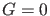
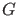

Next: Bifurcations along a Neimark-Sacker Up: Continuation of torus bifurcation Previous: Continuation of torus bifurcation Contents
A torus bifurcation of limit cycles (Neimark-Sacker, NS) generically corresponds to a bifurcation to an invariant torus, on which the flow contains periodic or quasi-periodic motion. It can be characterized by adding an extra constraint  to (47) where  is the torus test function which has four components from which two are selected. The complete BVP defining a NS point using a minimally extended system is